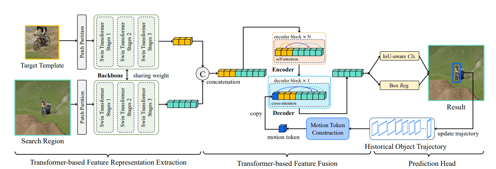

概述
- 基于 Siamese 框架的简单而高效的全注意力跟踪模型。
- 提出了motion token，编码了目标的历史轨迹，通过提供时间上下文来改进跟踪性能，且轻量不影响速度。
- SwainTrack 由三个部分组成：
- 用于特征提取的 Swin-Transformer主干网络。
- 用于视觉-运动特征融合的编码器-解码器网络。
- 用于分类与边界框回归的头部网络。

方法
与 ResNet 相比，Swin-Transformer 能够提供更紧凑的特征表示和更丰富得到语义信息。
与 Siamese 网络一致，SwinTrack 需要Template与search两个输入，两个输入都如 Swin-Transformer 的处理方式一样，被分割为不重叠的 patch 送入网络，分别得到 φ(z) 与 φ(x)。
视觉-运动特征编码器-解码器
编码器
将template特征 φ(z) 与search特征 φ(x) 简单的拼接得到混合表示 fm1 输入编码器融合。编码器是 Transformer 编码器。
解码器
解码器需要一个通过目标对象历史轨迹生成的motion token，历史轨迹被表示为一组目标对象边界框 T={os(1),...,os(n)}，s(n) 表示从当前时刻开始每间隔一段时间采样到的坐标，t 时刻的边界框 ot={otx1,oty1,otx2,oty1}，因为输入图像被进行了处理（缩放填充平移之类的），所以对轨迹应用相同的变换，使其对裁剪不变，得到 Tˉ={oˉs(t),...,oˉs(n)}。拆分后得到输出 fzL,fxL
将目标对象框的 4 个坐标被归一化后乘以 g 取整为 [1,g] 范围内的整数，如果不存在对象则设为 g+1。
n(o,l)=⎩⎪⎨⎪⎧⌊lo×g⌋g+1,如果对象存在else
o^t={n(oˉtx1,w),n(oˉty1,h),n(oˉtx2,w),n(oˉty2,h)}∈R1×4
最终 motion token为所有对象框拼接而成：
Emotion=concat(o^s(t),...,o^s(n))∈R1×d
解码器并不是Transformer的自回归解码器，而是简单的将motion token与编码器的输出拼接得到
fmD=concat(Emotion,fzL,fxL)
经过多头交叉注意力：
fvm′=fxL+MCA(LN(fxL),LN(fmD))
前馈神经网络：
fvm=fvm′+FFN(LN(fvm′))
头部网络
分为两个分支：分类和边界框回归，每一个分支都是一个三层感知器。分别预测分类响应图 rcls∈R(Hx×Wx)×1 和边界框回归映射 rreg∈R(Hx×Wx)×4
Arxiv
Github